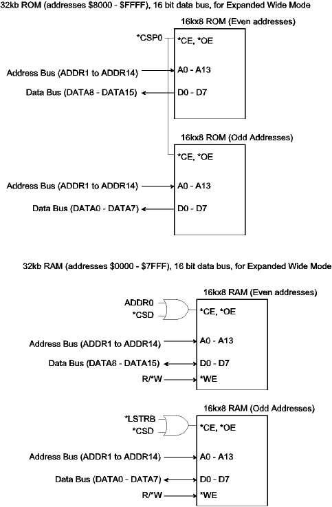
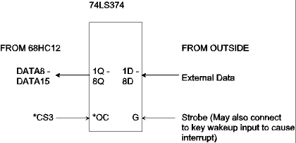

| Previous Section | Next Section | Index | Questions | Search the Text |
In the preceding examples, "glue" logic was used to drive the chip enable inputs of the memory devices because it was necessary to perform address decoding to determine if the device was being selected. The 68HC812A4 has internal logic which generates "chip select" outputs that can be used directly to drive the chip enable inputs. Two chip selects, CSP0 and CSP1, are intended for program memory (ROM), another, CSD, is intended for data memory (RAM). Four more, CS0 through CS3, called "register following chip selects," are intended for peripheral devices. Each chip select has an associated clock stretch of 0, 1, 2, or 3 E-clocks. The following registers are used:
| Register | Bit 7 | Bit 6 | Bit 5 | Bit 4 | Bit 3 | Bit 2 | Bit 1 | Bit 0 |
|---|---|---|---|---|---|---|---|---|
| CSCTL0 ($003C) | 0 | CSP1E | CSP0E | CSDE | CS3E | CS2E | CS1E | CS0E |
| CSCTL1 ($003D) | 0 | CSP1FL | CSPA21 | CSDHF | CS3EP | 0 | 0 | 0 |
| CSSTR0 ($003E) | 0 | 0 | SRP1A | SRP1B | SRP0A | SRP0B | STRDA | STRDB |
| CSSTR1 ($003F) | STR3A | STR3B | STR2A | STR2B | STR1A | STR1B | STR0A | STR0B |
CSCTL0 and CSCTL1 are used to enable the chip selects. CSSTR0 and CSSTR1 control the clock stretch. At reset, CSP0E is 1 (enabled), and all the clock stretch bits are 1, forcing maximum clock stretch. This allows the processor to start executing a program in the external ROM. The initialization code must configure these registers for any additional chip selects to be used (such as CSD for external RAM), and may reduce the clock stretch for increased performance. Most devices will work properly with a clock stretch of 1 E-clock.
Between any clock stretch, and the dividing of word accesses into separate byte accesses, the instruction timing given in the CPU12 manual must be increased for each memory read or write according the table below. N is the number of cycles of clock stretch.
| Byte | Aligned Word | Unaligned Word | |
|---|---|---|---|
| Internal | 0 | 0 | 0 |
| Expanded Narrow | N | 1 + 2*N | 1 + 2*N |
| Expanded Wide | N | N | 1 + 2*N |
Normally, CSP0 is used for program ROM. The chip select is asserted for addresses in the range $8000-$FFFF. The CSD chip select is used for RAM in the address range $0000-$7FFF (providing CSDHF is also set). The chip selects are not asserted for addresses handled by the internal memory and registers. CSP1, and the control bits CSP1FL, CSPA21, CSDHF (=0), and CS3EP are for use with extended addressing (greater than 64k address space). Using CSP0 and CSD one gets the following memory map:
| Address | Bank Accessed |
|---|---|
| $0 - $1FF with some exceptions | Registers |
| $0 - $1FF exceptions | External RAM |
| $200 - $3FF | External RAM or Peripherals (see below) |
| $400-$7FF | External RAM |
| $800-$BFF | Internal RAM |
| $C00 - $FFF | External RAM |
| $1000-$1FFF | Internal EEPROM |
| $2000-$7FFF | External RAM |
| $8000-$FFFF | External ROM |
The partial schematic for the memory banks needed in this arrangement in Expanded Wide Mode is:

The stretch bits are set as follows:
| Bit SxxxA | Bit SxxxB | E Clocks |
|---|---|---|
| 0 | 0 | 0 |
| 0 | 1 | 1 |
| 1 | 0 | 2 |
| 1 | 1 | 3 |
The peripheral chip selects, CS0 through CS3 are asserted for small overlapping ranges of addresses. They are always in the 512 byte address block just above that occupied by the internal registers. In case of addresses which fall in the range of two or more enabled chip selects, the higher numbered select has priority. All of the peripheral chip selects have priority over the program and data memory chip selects, as shown in the memory map above. The chip select address blocks given the default register block location are:
| Chip Select | Address Block |
|---|---|
| CS0 | $200-$3FF |
| CS1 | $300-$3FF |
| CS2 | $380-$3FF |
| CS3 | $280-$2FF |
If all four chip selects are used, each chip select will be asserted for a 128 byte block of addresses.
The NDRC bit in the Miscellaneous Mapping Control Register (MISC, $0013) when set forces 8 bit data bus operation (using Port C, DATA8 through DATA15) in the peripheral chip select address block ($200-$3FF). This allows 8 bit peripheral devices to be easily used in the Expanded Wide Mode.
| Register | Bit 7 | Bit 6 | Bit 5 | Bit 4 | Bit 3 | Bit 2 | Bit 1 | Bit 0 |
|---|---|---|---|---|---|---|---|---|
| MISC | EWDIR | NDRC | 0 | 0 | 0 | 0 | 0 | 0 |
In the following example, CS3 is used to read from a single 74LS374 8 bit latch in a system running in Expanded Wide mode:

Data from outside is latched into the 74LS374 with the strobe. The strobe could be connected to a key wakeup to cause an interrupt, signaling the microcontroller that there is new data present. The 68HC12 can read the data by reading any memory location from $280 to $2FF since no additional address decoding is performed. The following initialization code sequence can be used:
bset CSCTL0 $8 ; enable CS3
bset MISC $40 ; Set NDRC
bclr CSSTR1 $C0 ; We don't need any stretch
If we were operating in Expanded Narrow mode, the setting of the NDRC bit would not be necessary, and we would connect to DATA0 - DATA7 of the 68HC12.
Let us use for the example, the ROM memory connected to the 68HC812A4 using chip selects, as shown earlier in this section. The memory chip to be used is the Atmel AT27LV256A-5. We wish to know if the set-up and hold requirements of the data in for a read cycle of the microcontroller are met. There are two paths of concern relative to the microcontroller -- from chip select to data in and from address out to read data in.
For the set-up time based on the chip select, from the start of the memory cycle (falling edge of ECLK):
This adds up to 145 ns. However the memory cycle is 125 ns. In order to use this memory part, we would need memory with chip enable to output propagation time of 30 ns or less, or we could use 1 ECLK period of clock stretch. This would make the memory cycle 250 ns long, which would give plenty of time. Now let's consider the set-up time based on address out to data in, from the start of the memory cycle:
The same values apply here, so again we need either a clock stretch value of 1 or faster memory.
In this particular case, hold time is not an issue because the required hold time of the read data input microcontroller is 0ns while the microcontroller hold on the address and chip select are no less than 0ns - thus the data cannot go away while it is still required. Note that hold time is an issue with the MC9S12DP256. These calculations will be left as an exercise for the student!
Because the MC9S12DP256 was designed primarily for single chip operation, it has limited features for chip selects and clock stretch. The only chip select provided for normal use is the *XCS pin of port K. The two EXSTR bits in the MISC register control the clock stretch to be 0, 1, 2, or 3, ECLK cycles. By default the value is 3.
Continue with Memory Expansion.
Return to the Index.